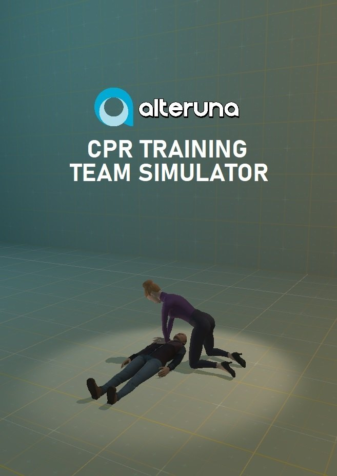
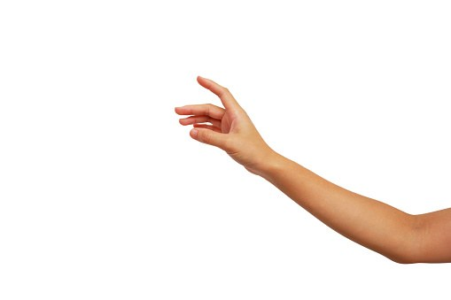
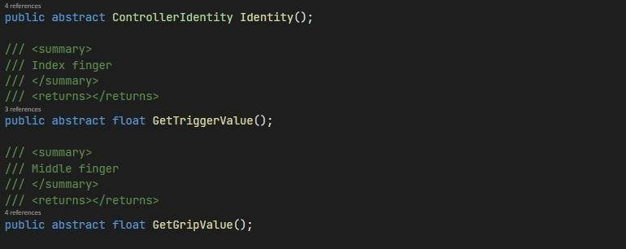

CPR Training Team Simulator
A VR simulator for CPR training at Alteruna. I built shared behaviours for NPC helpers, linked a real training dummy to the virtual one, and developed hand-tracking input, all in C# and Unity.

- Studio
- Alteruna
- Years
- 2020–2022, unreleased
- Platform
- VR
- My focus
- NPC behaviour, VR interaction, hand tracking
- Tech
- Unity, C#
NPC helpers during CPR training
I created shared behaviours for a group of NPCs that change depending on what the player does and what state the other NPCs are in. I implemented their animations, audio and behaviours using C# and Unity's tools.
The player's job was to tell the NPCs what to do while starting CPR on the patient.
In the first version, delegation was automatically sequential: each time the player interacted with an NPC, it was given the next unique command. This was later opened up to voice commands from the player.
Real and virtual world connection
All certified CPR training has to be done on a dummy, because trainees need to feel how much force it actually takes to perform CPR properly.
We solved this by placing the dummy and a controller in a shared, fixed position in the real world, then configuring the virtual dummy to sit in the same position relative to the controller.
This also helped immerse the player. We used audio and in-game events to put them under stress, bringing the experience closer to a real CPR scenario.
Hand-tracking interactions
Hand tracking lets the user interact with their actual hands instead of controllers. I iterated on several versions of this new kind of input system, and they fall into two categories.
Gesture based
I developed a tool for recording hand gestures, and a system that recognises those gestures and responds by invoking an event. It was very interesting to work out the most common ways people grab or point at something, while covering as many edge cases as possible.
Physics based
Using Unity's physics components, I set up hands that took the position data from the hand-tracking input and fed it into the physics simulation. This gave accurate collisions and a feeling of weight in the hands, but it wasn't a good fit for delicate interactions.

